<!doctype html>
<html lang="pt-BR">
<head>
<meta charset="utf-8"/>
<meta name="viewport" content="width=device-width,initial-scale=1"/>
<title>Slides - Oferta e Demanda</title>
<style>
  @import url('https://fonts.googleapis.com/css2?family=Caveat:wght@400;700&family=Indie+Flower&display=swap');

  * {
    margin: 0;
    padding: 0;
    box-sizing: border-box;
  }

  body {
    background: #1a1a1a;
    display: flex;
    flex-direction: column;
    justify-content: center;
    align-items: center;
    min-height: 100vh;
    font-family: 'Indie Flower', cursive;
    padding: 20px;
  }

#slide-container {
  width: 98%;
  max-width: 98vw;
  min-height: 650px; /* fallback */
  background: #1a1a1a;
  border: 3px solid #444;
  border-radius: 8px;
  box-shadow: 0 8px 24px rgba(0,0,0,0.6), inset 0 0 20px rgba(0,0,0,0.3);
  position: relative;
  overflow: visible;
  display: flex;
  flex-direction: column;
  align-items: center;
  justify-content: center;
  margin-bottom: 50px;
  padding: 20px;
}


  #slide-content {
    width: 100%;
    height: 100%;
    display: flex;
    flex-direction: column;
    align-items: center;
    justify-content: center;
    padding: 60px 40px;
    text-align: center;
    position: relative;
  }

  #slide-content.canvas-view {
    padding: 0;
  }

  #canvas-iframe {
    width: 100%;
    height: 100%;
    border: none;
    border-radius: 8px;
    display: none;
    opacity: 0;
    transition: opacity 0.5s ease-in-out;
  }

  #slide-content.canvas-view #canvas-iframe {
    display: block;
    opacity: 1;
  }

  #slide-content.canvas-view #slide-title,
  #slide-content.canvas-view #slide-body {
    display: none;
  }

  #slide-title {
    color: #f5f5dc;
    font-size: 42px;
    font-weight: 700;
    margin-bottom: 30px;
    min-height: 60px;
    min-width: 800px;
    height: 60px;
    opacity: 1;
    transition: opacity 0.3s ease-in-out;
  }

  #slide-body {
    color: #d4d4d4;
    font-size: 22px;
    line-height: 1.8;
    max-width: 800px;
    min-height: 200px;
    opacity: 1;
    transition: opacity 0.3s ease-in-out;
  }

  #slide-content.canvas-view #slide-title,
  #slide-content.canvas-view #slide-body {
    opacity: 0;
  }

  #slide-title.hidden,
  #slide-body.hidden {
    visibility: hidden;
    opacity: 0;
  }

  .carousel-dots {
    position: absolute;
    bottom: -40px;
    left: 50%;
    transform: translateX(-50%);
    display: flex;
    gap: 15px;
    z-index: 1000;
    pointer-events: auto;
  }

  .carousel-dot {
    width: 14px;
    height: 14px;
    border-radius: 50%;
    background: rgba(212, 212, 212, 0.4);
    border: 2px solid #d4d4d4;
    cursor: default;
    transition: all 0.3s ease;
    position: relative;
    z-index: 20;
  }

  .carousel-dot.active {
    background: #f5f5dc;
    box-shadow: 0 0 12px rgba(245, 245, 220, 0.6);
    transform: scale(1.3);
  }

  .carousel-arrow {
    width: 30px;
    height: 30px;
    background: rgba(212, 212, 212, 0.5);
    border: 2px solid #d4d4d4;
    border-radius: 50%;
    cursor: pointer;
    display: flex;
    align-items: center;
    justify-content: center;
    color: #f5f5dc;
    font-size: 18px;
    font-weight: bold;
    transition: all 0.3s ease;
    user-select: none;
    z-index: 20;
    padding: 0;
    font-family: inherit;
  }

  .carousel-arrow:hover {
    background: rgba(212, 212, 212, 0.8);
    transform: scale(1.1);
  }

  .carousel-arrow:active {
    transform: scale(0.95);
  }

  .carousel-arrow:focus {
    outline: none;
  }

  @media (max-width: 768px) {
    #slide-container {
      height: 600px;
    }

    #slide-title {
      font-size: 32px;
    }

    #slide-body {
      font-size: 18px;
    }
  }
</style>
</head>
<body>
<!-- Música de fundo -->
<audio id="bg-music" src="music.mp3" loop autoplay></audio>
<div id="slide-container">
  <div id="slide-content">
    <div id="slide-title"></div>
    <div id="slide-body"></div>
    <iframe id="canvas-iframe" src="canvas.html"></iframe>
  </div>
  <div class="carousel-dots" id="carousel-dots"></div>
</div>

<script>

 // Ajustar volume da música
  const music = document.getElementById("bg-music");
  music.volume = 0.3; // volume baixo (10%)

  // Tocar automaticamente após interação do usuário (necessário em alguns navegadores)
  document.addEventListener('click', () => {
    if (music.paused) music.play();
  });

  // Dados dos slides
  const slides = [
   {
  title: "Relembrando Oferta e Demanda",
  body: `
    Antes de prosseguirmos, vamos relembrar o que aprendemos sobre <b>oferta</b> e <b>demanda</b>.<br><br>
    A <b>lei da demanda</b> afirma que, <i>quando o preço de um bem aumenta, a quantidade demandada tende a diminuir</i> — pois os consumidores passam a buscar alternativas mais baratas.<br><br>
    Já a <b>lei da oferta</b> diz que, <i>quanto maior o preço, maior tende a ser a quantidade ofertada</i> — já que os produtores têm mais incentivo para produzir e vender.<br><br>
    Essas duas leis formam a base da teoria de mercado: o ponto onde oferta e demanda se encontram é o <b>preço de equilíbrio</b>.
  `
},
{
  title: "O Leiloeiro Walrasiano",
  body: `
    Léon Walras (1834–1910) foi um dos fundadores da economia neoclássica e autor de <i>“Elementos de Economia Política Pura”</i> (1874), obra em que desenvolveu a teoria do <b>equilíbrio geral</b> — a ideia de que todos os mercados podem, em princípio, se equilibrar ao mesmo tempo.
    Para explicar esse processo, Walras criou a parábola do <b>leiloeiro walrasiano</b>. Nela, um leiloeiro imaginário anuncia preços para todos os bens, e os agentes econômicos informam quanto desejam comprar ou vender. Se há excesso de demanda, o preço sobe; se há excesso de oferta, o preço cai.
    Nenhuma troca acontece até que todos os mercados estejam em equilíbrio — é o chamado <i>tâtonnement</i>, um processo de “tentativas e ajustes” que simboliza o mecanismo de coordenação do mercado.
    Essa metáfora expressa a visão de Walras de que os preços funcionam como um sistema de sinais capaz de harmonizar decisões individuais e levar a economia a um ponto de equilíbrio geral.
  `
}
,
{
  title: "Vamos Praticar com o Leiloeiro Walrasiano!",
  body: `
    Agora que entendemos o conceito, vamos praticar!
    No próximo slide, você poderá experimentar o papel do leiloeiro walrasiano que tenta equilibrar um único mercado: o mercado de bananas. Escolha os preços que o leiloeiro irá anunciar e observe, em tempo real, como os <b>consumidores</b> e <b>produtores</b> reagem. Aumente o preço quando houver excesso de demanda e diminua quando houver excesso de oferta.<br>
    <div style="position: relative; display: inline-block;">
      
      <div style="
        position: absolute;
        top: 40%;
        left: 220px;
        transform: rotate(10deg);
        color: #4caf50;
        font-family: 'Caveat', cursive;
        font-size: 1.6em;
        white-space: nowrap;
      ">
        ⇦ Esse é John, o leiloeiro walrasiano!
      </div>
    </div>
  `
}
,
    {
      title: "",
      body: ""
    }
  ];

  let currentSlide = 0;
  let isAnimating = false;

   // Criar elementos de áudio
  const audioContext = new (window.AudioContext || window.webkitAudioContext)();

  function playWritingSound() {
    const now = audioContext.currentTime;
    const duration = 0.12;
    const bufferSize = audioContext.sampleRate * duration;
    const buffer = audioContext.createBuffer(1, bufferSize, audioContext.sampleRate);
    const data = buffer.getChannelData(0);

    for (let i = 0; i < bufferSize; i++) {
      const t = i / audioContext.sampleRate;
      const noise = Math.random() * 2 - 1;
      const envelope = 1 - (t / duration);
      data[i] = noise * 0.3 * envelope;
    }

    const source = audioContext.createBufferSource();
    source.buffer = buffer;
    const gainNode = audioContext.createGain();
    gainNode.gain.setValueAtTime(0.12, now);
    gainNode.gain.linearRampToValueAtTime(0.02, now + duration);
    source.connect(gainNode);
    gainNode.connect(audioContext.destination);
    source.start(now);
  }

  // 🔊 Novo som de apagador (ruído suave com fade-out)
  function playEraseSound() {
    const now = audioContext.currentTime;
    const duration = 0.6;
    const bufferSize = audioContext.sampleRate * duration;
    const buffer = audioContext.createBuffer(1, bufferSize, audioContext.sampleRate);
    const data = buffer.getChannelData(0);

    for (let i = 0; i < bufferSize; i++) {
      const t = i / audioContext.sampleRate;
      // ruído mais grave (filtrado)
      const noise = (Math.random() * 2 - 1) * Math.exp(-3 * t);
      const envelope = 1 - (t / duration);
      data[i] = noise * 0.4 * envelope;
    }

    const source = audioContext.createBufferSource();
    source.buffer = buffer;
    const gainNode = audioContext.createGain();
    gainNode.gain.setValueAtTime(0.25, now);
    gainNode.gain.linearRampToValueAtTime(0.0, now + duration);
    source.connect(gainNode);
    gainNode.connect(audioContext.destination);
    source.start(now);
  }

  // ✏️ Efeito de apagador visual + som
  async function eraseText(element) {
    const text = element.textContent;
    const duration = 300;
    const startTime = Date.now();

    // toca o som logo no início
    playEraseSound();

    return new Promise(resolve => {
      const animate = () => {
        const elapsed = Date.now() - startTime;
        const progress = Math.min(elapsed / duration, 1);
        const visibleChars = Math.floor(text.length * (1 - progress));
        element.textContent = text.substring(0, visibleChars);

        if (progress < 1) {
          requestAnimationFrame(animate);
        } else {
          element.textContent = '';
          resolve();
        }
      };
      animate();
    });
  }

  // Efeito de escrita com giz
  async function writeText(element) {
    const text = element.textContent;
    const duration = 500;
    const startTime = Date.now();
    let lastSoundTime = 0;
    const soundInterval = 60; // Som a cada 120ms

    element.classList.remove('hidden');
    element.textContent = '';

    return new Promise(resolve => {
      const animate = () => {
        const elapsed = Date.now() - startTime;
        const progress = Math.min(elapsed / duration, 1);
        const visibleChars = Math.floor(text.length * progress);
        element.textContent = text.substring(0, visibleChars);

        // Tocar som periodicamente durante a escrita
        if (elapsed - lastSoundTime >= soundInterval && progress < 1) {
          playWritingSound();
          lastSoundTime = elapsed;
        }

        if (progress < 1) {
          requestAnimationFrame(animate);
        } else {
          element.textContent = text;
          resolve();
        }
      };
      animate();
    });
  }

  // Animar mudança de slide
  async function animateSlideChange() {
    if (isAnimating) return;
    isAnimating = true;

    const titleEl = document.getElementById('slide-title');
    const bodyEl = document.getElementById('slide-body');
    const iframeEl = document.getElementById('canvas-iframe');
    const slideContent = document.getElementById('slide-content');
    const slide = slides[currentSlide];

    if (currentSlide === slides.length - 1) {
      titleEl.style.opacity = '0';
      bodyEl.style.opacity = '0';
      await new Promise(resolve => setTimeout(resolve, 300));
      slideContent.classList.add('canvas-view');
      await new Promise(resolve => setTimeout(resolve, 50));
      iframeEl.style.opacity = '1';
    } else {
      if (slideContent.classList.contains('canvas-view')) {
        iframeEl.style.opacity = '0';
        await new Promise(resolve => setTimeout(resolve, 300));
        slideContent.classList.remove('canvas-view');
      }
      
      if (currentSlide > 0) {
        await eraseText(titleEl);
	bodyEl.innerHTML = ''; // apenas limpa o corpo, sem apagar tag
      }


      titleEl.innerHTML = slide.title;
      bodyEl.innerHTML = slide.body;
      titleEl.classList.add('hidden');
      bodyEl.classList.add('hidden');

      playWritingSound();
      await writeText(titleEl); // efeito só no título
      bodyEl.classList.remove('hidden'); // mostra o corpo completo sem escrever letra a letra
      
      titleEl.style.opacity = '1';
      bodyEl.style.opacity = '1';
    }

    updateCarouselDots();
    isAnimating = false;
  }

  // Atualizar bolinhas
  function updateCarouselDots() {
    const dots = document.querySelectorAll('.carousel-dot');
    dots.forEach((dot, index) => {
      if (index === currentSlide) {
        dot.classList.add('active');
      } else {
        dot.classList.remove('active');
      }
    });
  }

  // Criar bolinhas e setas
  function initCarouselDots() {
    const dotsContainer = document.getElementById('carousel-dots');
    
    // Seta anterior
    const prevBtn = document.createElement('div');
    prevBtn.className = 'carousel-arrow';
    prevBtn.textContent = '←';
    prevBtn.onclick = function() {
      if (currentSlide > 0 && !isAnimating) {
        currentSlide--;
        animateSlideChange();
      }
    };
    dotsContainer.appendChild(prevBtn);
    
    // Bolinhas
    for (let i = 0; i < slides.length; i++) {
      const dot = document.createElement('div');
      dot.className = 'carousel-dot';
      if (i === currentSlide) dot.classList.add('active');
      dotsContainer.appendChild(dot);
    }
    
    // Seta próximo
    const nextBtn = document.createElement('div');
    nextBtn.className = 'carousel-arrow';
    nextBtn.textContent = '→';
    nextBtn.onclick = function() {
      if (currentSlide < slides.length - 1 && !isAnimating) {
        currentSlide++;
        animateSlideChange();
      }
    };
    dotsContainer.appendChild(nextBtn);
  }

// Função para calcular a altura máxima dos slides
function calculateMaxSlideHeight() {
  const tempDiv = document.createElement('div');
  tempDiv.style.position = 'absolute';
  tempDiv.style.visibility = 'hidden';
  tempDiv.style.width = 'calc(98% - 40px)'; // considera padding
  tempDiv.style.padding = '20px';
  tempDiv.style.fontFamily = "'Indie Flower', cursive";
  tempDiv.style.fontSize = '22px';
  tempDiv.style.lineHeight = '1.8';
  document.body.appendChild(tempDiv);

  let maxHeight = 0;

  slides.forEach(slide => {
    tempDiv.innerHTML = `<div style="font-size:42px; font-weight:700; margin-bottom:30px;">${slide.title}</div>${slide.body}`;
    const height = tempDiv.offsetHeight;
    if (height > maxHeight) maxHeight = height;
  });

  document.body.removeChild(tempDiv);
  return maxHeight + 40; // adiciona um pouco de folga
}


  // Inicializar
  window.addEventListener('load', () => {
     const slideContainer = document.getElementById('slide-container');
  const maxHeight = calculateMaxSlideHeight();
  slideContainer.style.height = maxHeight + 'px'; // altura fixa
  initCarouselDots();
  animateSlideChange();
  });

</script>

</body>
</html>
